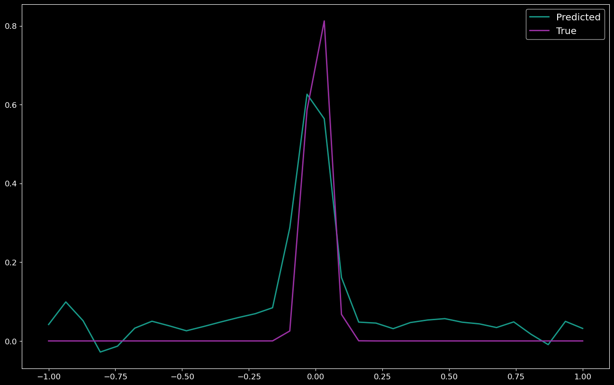

1D Noisy Gaussian Deconvolution¶
In this notebook, I will develop the framework to use a recurrent inference machine to solve a basic 1D deconvolution problem.
The problem: Given a 1D Gaussian profile convolved with Poisson noise, can we use and RIM to recover the original 1D Gaussian profile.
[1]:
import numpy as np
import matplotlib.pyplot as plt
import tensorflow as tf
from tensorflow import keras
from tensorflow.keras import layers
import time
import sys
sys.path.append("/home/carterrhea/Documents/RIM/") # Path to your version
from RIM_sequence import RIM
plt.style.use('dark.mplstyle')
2022-11-11 13:59:08.241854: I tensorflow/core/platform/cpu_feature_guard.cc:193] This TensorFlow binary is optimized with oneAPI Deep Neural Network Library (oneDNN) to use the following CPU instructions in performance-critical operations: SSE4.1 SSE4.2 AVX AVX2 AVX512F AVX512_VNNI FMA
To enable them in other operations, rebuild TensorFlow with the appropriate compiler flags.
2022-11-11 13:59:09.736224: I tensorflow/core/platform/cpu_feature_guard.cc:193] This TensorFlow binary is optimized with oneAPI Deep Neural Network Library (oneDNN) to use the following CPU instructions in performance-critical operations: SSE4.1 SSE4.2 AVX AVX2 AVX512F AVX512_VNNI FMA
To enable them in other operations, rebuild TensorFlow with the appropriate compiler flags.
2022-11-11 13:59:09.737494: I tensorflow/core/common_runtime/process_util.cc:146] Creating new thread pool with default inter op setting: 2. Tune using inter_op_parallelism_threads for best performance.
[2]:
n = 50 # Size of spectrum
N = 5000 # Number of spectra
Create Convolved Image¶
[3]:
def gaussian(x, mu, sig):
return 1*np.exp(-np.power(x - mu, 2.) / (2 * np.power(sig, 2.)))
def conv_mat(n):
"""
Create convolution matrix that is an identity matrix with noise
"""
conv_mat = np.eye(n)+np.random.normal(0, 0.05, (n,n))
return conv_mat
def create_convolved(N):
'''
Create convolved Gaussian that are 28x28
Args:
n - number of Gausians
Return:
gaussians - List of convolved Gaussians
'''
a = 0.01 # Powerlaw slope
gaussians_initial = [] # List of initial Gaussians
powerlaw_conv = [] # List of Powerlaws used in convolution
gaussians_final = [] # List of final Gaussians after convolution
noise = [] # List of noises added
for i in range(N):
# Create original 1D Gaussian (32 points)
x = np.linspace(-1,1,n)
gaus_orig = gaussian(x, np.random.uniform(0.001,.01), np.random.uniform(0,0.1))
gaussians_initial.append(gaus_orig)
# Convolve with additional Gaussian
conv_mat_ = conv_mat(n)
gaus_conv = conv_mat_@gaus_orig
# Add noise
noise_ = np.random.normal(0,0.1, n)
gaus_noise = gaus_conv + noise_
gaussians_final.append(gaus_noise)
powerlaw_conv.append(conv_mat_)
noise.append(noise_)
return gaussians_initial,gaussians_final,powerlaw_conv,noise
# Create N instances
gaussians_initial, gaussians_final,powerlaw_conv,noise = create_convolved(N)
[4]:
for i in range(5):
plt.plot(np.linspace(-1,1,n),gaussians_final[i], label='Convolved Gaussian %i'%i)
plt.legend()
[4]:
<matplotlib.legend.Legend at 0x7f81d194d4f0>

Recurrent Inference Machine¶
[5]:
# Create training, validation, and test sets
train_percentage = 0.7
valid_percentage = 0.9
test_percentage = 1.0
len_X = len(gaussians_initial)
# Training
X_train = gaussians_initial[:int(train_percentage*len_X)]
Y_train = gaussians_final[:int(train_percentage*len_X)]
A_train = powerlaw_conv[:int(train_percentage*len_X)]
N_train = noise[:int(train_percentage*len_X)]#[np.diag(noise_val) for noise_val in noise[:int(train_percentage*len_X)]]
#Validation
X_valid = gaussians_initial[int(train_percentage*len_X):int(valid_percentage*len_X)]
Y_valid = gaussians_final[int(train_percentage*len_X):int(valid_percentage*len_X)]
A_valid = powerlaw_conv[int(train_percentage*len_X):int(valid_percentage*len_X)]
N_valid = noise[int(train_percentage*len_X):int(valid_percentage*len_X)]#[np.diag(noise_val) for noise_val in noise[int(train_percentage*len_X):int(valid_percentage*len_X)]]
#Test
X_test = gaussians_initial[int(valid_percentage*len_X):]
Y_test = gaussians_final[int(valid_percentage*len_X):]
A_test = powerlaw_conv[int(valid_percentage*len_X):]
N_test = noise[int(valid_percentage*len_X):]#[np.diag(noise_val) for noise_val in noise[int(valid_percentage*len_X):]]
[6]:
# Load model and define hyper parameters
epochs = 10
batch_size = 8
model = RIM(rnn_units1=256, rnn_units2=256, conv_filters=8, kernel_size=2, input_size=n, dimensions=1, t_steps=10, learning_rate=0.005)
# Prepare the training dataset
train_dataset = tf.data.Dataset.from_tensor_slices((X_train, Y_train, A_train, N_train))
train_dataset = train_dataset.batch(batch_size, drop_remainder=True)
train_dataset = train_dataset.prefetch(2)
# Prepare the validation dataset
val_dataset = tf.data.Dataset.from_tensor_slices((X_valid, Y_valid, A_valid, N_valid))
val_dataset = val_dataset.batch(batch_size, drop_remainder=True)
val_dataset = val_dataset.prefetch(2)
[7]:
# Fit model
ysol_valid, training_loss, valid_loss, learning_rates = model.fit(batch_size, epochs, train_dataset, val_dataset)
Training epoch: 1:: Completion: 0.00% ETA 03:39:06 loss: 9.805E-01 MSE: 1.045E+00
Training epoch: 1:: Completion: 2.29% ETA 00:08:58 loss: 2.373E-01 MSE: 1.144E+00
Training epoch: 1:: Completion: 4.58% ETA 00:10:46 loss: 2.410E-01 MSE: 7.177E-01
Training epoch: 1:: Completion: 6.86% ETA 00:09:09 loss: 2.274E-01 MSE: 5.543E-01
Training epoch: 1:: Completion: 9.15% ETA 00:10:50 loss: 2.272E-01 MSE: 4.685E-01
Training epoch: 1:: Completion: 11.44% ETA 00:10:16 loss: 2.424E-01 MSE: 4.147E-01
Training epoch: 1:: Completion: 13.73% ETA 00:09:39 loss: 2.267E-01 MSE: 3.780E-01
Training epoch: 1:: Completion: 16.02% ETA 00:08:42 loss: 2.264E-01 MSE: 3.533E-01
Training epoch: 1:: Completion: 18.31% ETA 00:10:44 loss: 2.248E-01 MSE: 3.352E-01
Training epoch: 1:: Completion: 20.59% ETA 00:08:05 loss: 2.278E-01 MSE: 3.211E-01
Training epoch: 1:: Completion: 22.88% ETA 00:08:11 loss: 2.302E-01 MSE: 3.093E-01
Training epoch: 1:: Completion: 25.17% ETA 00:07:02 loss: 2.266E-01 MSE: 2.992E-01
Training epoch: 1:: Completion: 27.46% ETA 00:07:12 loss: 2.292E-01 MSE: 2.905E-01
Training epoch: 1:: Completion: 29.75% ETA 00:07:25 loss: 2.287E-01 MSE: 2.837E-01
Training epoch: 1:: Completion: 32.04% ETA 00:07:11 loss: 2.307E-01 MSE: 2.780E-01
Training epoch: 1:: Completion: 34.32% ETA 00:08:56 loss: 2.271E-01 MSE: 2.728E-01
Training epoch: 1:: Completion: 36.61% ETA 00:07:27 loss: 2.290E-01 MSE: 2.680E-01
Training epoch: 1:: Completion: 38.90% ETA 00:08:05 loss: 2.293E-01 MSE: 2.637E-01
Training epoch: 1:: Completion: 41.19% ETA 00:05:57 loss: 2.247E-01 MSE: 2.603E-01
Training epoch: 1:: Completion: 43.48% ETA 00:07:08 loss: 2.303E-01 MSE: 2.574E-01
Training epoch: 1:: Completion: 45.77% ETA 00:05:54 loss: 2.304E-01 MSE: 2.547E-01
Training epoch: 1:: Completion: 48.05% ETA 00:06:18 loss: 2.247E-01 MSE: 2.518E-01
Training epoch: 1:: Completion: 50.34% ETA 00:06:03 loss: 2.292E-01 MSE: 2.494E-01
Training epoch: 1:: Completion: 52.63% ETA 00:04:58 loss: 2.332E-01 MSE: 2.473E-01
Training epoch: 1:: Completion: 54.92% ETA 00:04:19 loss: 2.251E-01 MSE: 2.451E-01
Training epoch: 1:: Completion: 57.21% ETA 00:03:48 loss: 2.252E-01 MSE: 2.432E-01
Training epoch: 1:: Completion: 59.50% ETA 00:05:44 loss: 2.252E-01 MSE: 2.415E-01
Training epoch: 1:: Completion: 61.78% ETA 00:05:06 loss: 2.228E-01 MSE: 2.397E-01
Training epoch: 1:: Completion: 64.07% ETA 00:04:12 loss: 2.268E-01 MSE: 2.381E-01
Training epoch: 1:: Completion: 66.36% ETA 00:03:34 loss: 2.251E-01 MSE: 2.367E-01
Training epoch: 1:: Completion: 68.65% ETA 00:03:26 loss: 2.250E-01 MSE: 2.353E-01
Training epoch: 1:: Completion: 70.94% ETA 00:03:22 loss: 2.252E-01 MSE: 2.341E-01
Training epoch: 1:: Completion: 73.23% ETA 00:02:48 loss: 2.236E-01 MSE: 2.330E-01
Training epoch: 1:: Completion: 75.51% ETA 00:02:20 loss: 2.227E-01 MSE: 2.317E-01
Training epoch: 1:: Completion: 77.80% ETA 00:02:05 loss: 2.223E-01 MSE: 2.306E-01
Training epoch: 1:: Completion: 80.09% ETA 00:02:04 loss: 2.266E-01 MSE: 2.297E-01
Training epoch: 1:: Completion: 82.38% ETA 00:01:41 loss: 2.172E-01 MSE: 2.284E-01
Training epoch: 1:: Completion: 84.67% ETA 00:01:35 loss: 2.175E-01 MSE: 2.272E-01
Training epoch: 1:: Completion: 86.96% ETA 00:01:35 loss: 1.764E-01 MSE: 2.273E-01
Training epoch: 1:: Completion: 89.24% ETA 00:01:07 loss: 3.036E-01 MSE: 2.416E-01
Training epoch: 1:: Completion: 91.53% ETA 00:00:48 loss: 2.169E-01 MSE: 2.412E-01
Training epoch: 1:: Completion: 93.82% ETA 00:00:41 loss: 2.069E-01 MSE: 2.407E-01
Training epoch: 1:: Completion: 96.11% ETA 00:00:33 loss: 1.684E-01 MSE: 2.391E-01
Training epoch: 1:: Completion: 98.40% ETA 00:00:10 loss: 1.497E-01 MSE: 2.362E-01
Validation epoch: 1:: Completion: 0.00% ETA: 00:54:31 train_loss: 1.327E-01 train_MSE: 2.340E-01 val_loss: 1.397E-01 val_MSE: 1.397E-01
Validation epoch: 1:: Completion: 2.29% ETA: 00:02:40 train_loss: 1.327E-01 train_MSE: 2.340E-01 val_loss: 1.680E-01 val_MSE: 1.317E-01
Validation epoch: 1:: Completion: 4.58% ETA: 00:03:03 train_loss: 1.327E-01 train_MSE: 2.340E-01 val_loss: 1.426E-01 val_MSE: 1.310E-01
Validation epoch: 1:: Completion: 6.86% ETA: 00:02:21 train_loss: 1.327E-01 train_MSE: 2.340E-01 val_loss: 1.297E-01 val_MSE: 1.315E-01
Validation epoch: 1:: Completion: 9.15% ETA: 00:01:44 train_loss: 1.327E-01 train_MSE: 2.340E-01 val_loss: 1.390E-01 val_MSE: 1.306E-01
Validation epoch: 1:: Completion: 11.44% ETA: 00:02:12 train_loss: 1.327E-01 train_MSE: 2.340E-01 val_loss: 1.450E-01 val_MSE: 1.300E-01
Validation epoch: 1:: Completion: 13.73% ETA: 00:02:24 train_loss: 1.327E-01 train_MSE: 2.340E-01 val_loss: 1.492E-01 val_MSE: 1.311E-01
Validation epoch: 1:: Completion: 16.02% ETA: 00:02:16 train_loss: 1.327E-01 train_MSE: 2.340E-01 val_loss: 1.412E-01 val_MSE: 1.321E-01
Validation epoch: 1:: Completion: 18.31% ETA: 00:01:49 train_loss: 1.327E-01 train_MSE: 2.340E-01 val_loss: 1.477E-01 val_MSE: 1.309E-01
Validation epoch: 1:: Completion: 20.59% ETA: 00:01:36 train_loss: 1.327E-01 train_MSE: 2.340E-01 val_loss: 1.143E-01 val_MSE: 1.310E-01
Validation epoch: 1:: Completion: 22.88% ETA: 00:02:14 train_loss: 1.327E-01 train_MSE: 2.340E-01 val_loss: 1.042E-01 val_MSE: 1.315E-01
Validation epoch: 1:: Completion: 25.17% ETA: 00:03:17 train_loss: 1.327E-01 train_MSE: 2.340E-01 val_loss: 1.347E-01 val_MSE: 1.310E-01
Validation epoch: 1:: Completion: 27.46% ETA: 00:02:44 train_loss: 1.327E-01 train_MSE: 2.340E-01 val_loss: 1.480E-01 val_MSE: 1.316E-01
Validation epoch: 1:: Completion: 100.00% ETA: 0 train_loss: 1.327E-01 train_MSE: 2.340E-01 val_loss: 1.420E-01 val_MSE: 1.320E-01
Training MSE: 0.2340
Validation MSE: 0.1320
Time taken on epoch: 00:13:00 seconds
Training epoch: 2:: Completion: 0.00% ETA 00:12:05 loss: 1.397E-01 MSE: 1.360E-01
Training epoch: 2:: Completion: 2.29% ETA 00:09:27 loss: 1.433E-01 MSE: 9.183E-02
Training epoch: 2:: Completion: 4.58% ETA 00:08:28 loss: 1.108E-01 MSE: 8.932E-02
Training epoch: 2:: Completion: 6.86% ETA 00:12:45 loss: 9.404E-02 MSE: 8.827E-02
Training epoch: 2:: Completion: 9.15% ETA 00:09:26 loss: 8.583E-02 MSE: 8.485E-02
Training epoch: 2:: Completion: 11.44% ETA 00:09:52 loss: 1.734E-01 MSE: 9.216E-02
Training epoch: 2:: Completion: 13.73% ETA 00:07:55 loss: 1.213E-01 MSE: 1.006E-01
Training epoch: 2:: Completion: 16.02% ETA 00:07:56 loss: 9.393E-02 MSE: 9.914E-02
Training epoch: 2:: Completion: 18.31% ETA 00:07:18 loss: 7.985E-02 MSE: 9.612E-02
Training epoch: 2:: Completion: 20.59% ETA 00:06:51 loss: 9.240E-02 MSE: 9.490E-02
Training epoch: 2:: Completion: 22.88% ETA 00:07:24 loss: 9.417E-02 MSE: 9.294E-02
Training epoch: 2:: Completion: 25.17% ETA 00:08:22 loss: 1.093E-01 MSE: 9.216E-02
Training epoch: 2:: Completion: 27.46% ETA 00:09:30 loss: 1.175E-01 MSE: 9.308E-02
Training epoch: 2:: Completion: 29.75% ETA 00:09:05 loss: 9.276E-02 MSE: 9.212E-02
Training epoch: 2:: Completion: 32.04% ETA 00:05:39 loss: 1.013E-01 MSE: 9.140E-02
Training epoch: 2:: Completion: 34.32% ETA 00:05:41 loss: 1.023E-01 MSE: 9.125E-02
Training epoch: 2:: Completion: 36.61% ETA 00:07:25 loss: 9.253E-02 MSE: 9.070E-02
Training epoch: 2:: Completion: 38.90% ETA 00:06:04 loss: 9.596E-02 MSE: 9.080E-02
Training epoch: 2:: Completion: 41.19% ETA 00:07:30 loss: 7.298E-02 MSE: 9.042E-02
Training epoch: 2:: Completion: 43.48% ETA 00:06:30 loss: 9.155E-02 MSE: 9.137E-02
Training epoch: 2:: Completion: 45.77% ETA 00:05:38 loss: 1.096E-01 MSE: 9.142E-02
Training epoch: 2:: Completion: 48.05% ETA 00:04:46 loss: 9.128E-02 MSE: 9.136E-02
Training epoch: 2:: Completion: 50.34% ETA 00:04:27 loss: 8.280E-02 MSE: 9.040E-02
Training epoch: 2:: Completion: 52.63% ETA 00:05:06 loss: 1.030E-01 MSE: 8.988E-02
Training epoch: 2:: Completion: 54.92% ETA 00:04:39 loss: 1.000E-01 MSE: 9.035E-02
Training epoch: 2:: Completion: 57.21% ETA 00:03:45 loss: 7.142E-02 MSE: 8.976E-02
Training epoch: 2:: Completion: 59.50% ETA 00:04:04 loss: 6.984E-02 MSE: 8.882E-02
Training epoch: 2:: Completion: 61.78% ETA 00:04:17 loss: 6.229E-02 MSE: 8.771E-02
Training epoch: 2:: Completion: 64.07% ETA 00:04:57 loss: 7.869E-02 MSE: 8.679E-02
Training epoch: 2:: Completion: 66.36% ETA 00:03:41 loss: 7.460E-02 MSE: 8.594E-02
Training epoch: 2:: Completion: 68.65% ETA 00:03:28 loss: 6.986E-02 MSE: 8.505E-02
Training epoch: 2:: Completion: 70.94% ETA 00:02:50 loss: 7.982E-02 MSE: 8.459E-02
Training epoch: 2:: Completion: 73.23% ETA 00:01:54 loss: 6.873E-02 MSE: 8.396E-02
Training epoch: 2:: Completion: 75.51% ETA 00:03:37 loss: 9.357E-02 MSE: 8.413E-02
Training epoch: 2:: Completion: 77.80% ETA 00:02:29 loss: 7.788E-02 MSE: 8.495E-02
Training epoch: 2:: Completion: 80.09% ETA 00:01:54 loss: 8.131E-02 MSE: 8.442E-02
Training epoch: 2:: Completion: 82.38% ETA 00:01:53 loss: 6.508E-02 MSE: 8.402E-02
Training epoch: 2:: Completion: 84.67% ETA 00:01:16 loss: 1.113E-01 MSE: 8.409E-02
Training epoch: 2:: Completion: 86.96% ETA 00:02:00 loss: 8.747E-02 MSE: 8.448E-02
Training epoch: 2:: Completion: 89.24% ETA 00:01:13 loss: 6.411E-02 MSE: 8.403E-02
Training epoch: 2:: Completion: 91.53% ETA 00:00:59 loss: 7.706E-02 MSE: 8.316E-02
Training epoch: 2:: Completion: 93.82% ETA 00:00:55 loss: 7.434E-02 MSE: 8.378E-02
Training epoch: 2:: Completion: 96.11% ETA 00:00:20 loss: 6.684E-02 MSE: 8.344E-02
Training epoch: 2:: Completion: 98.40% ETA 00:00:08 loss: 1.332E-01 MSE: 8.333E-02
Validation epoch: 2:: Completion: 0.00% ETA: 00:02:20 train_loss: 5.717E-02 train_MSE: 8.305E-02 val_loss: 6.099E-02 val_MSE: 6.099E-02
Validation epoch: 2:: Completion: 2.29% ETA: 00:02:08 train_loss: 5.717E-02 train_MSE: 8.305E-02 val_loss: 7.489E-02 val_MSE: 5.519E-02
Validation epoch: 2:: Completion: 4.58% ETA: 00:03:23 train_loss: 5.717E-02 train_MSE: 8.305E-02 val_loss: 6.954E-02 val_MSE: 5.715E-02
Validation epoch: 2:: Completion: 6.86% ETA: 00:03:07 train_loss: 5.717E-02 train_MSE: 8.305E-02 val_loss: 5.687E-02 val_MSE: 5.725E-02
Validation epoch: 2:: Completion: 9.15% ETA: 00:02:30 train_loss: 5.717E-02 train_MSE: 8.305E-02 val_loss: 5.899E-02 val_MSE: 5.620E-02
Validation epoch: 2:: Completion: 11.44% ETA: 00:02:14 train_loss: 5.717E-02 train_MSE: 8.305E-02 val_loss: 6.916E-02 val_MSE: 5.572E-02
Validation epoch: 2:: Completion: 13.73% ETA: 00:02:08 train_loss: 5.717E-02 train_MSE: 8.305E-02 val_loss: 6.777E-02 val_MSE: 5.624E-02
Validation epoch: 2:: Completion: 16.02% ETA: 00:04:38 train_loss: 5.717E-02 train_MSE: 8.305E-02 val_loss: 6.346E-02 val_MSE: 5.707E-02
Validation epoch: 2:: Completion: 18.31% ETA: 00:01:48 train_loss: 5.717E-02 train_MSE: 8.305E-02 val_loss: 6.367E-02 val_MSE: 5.626E-02
Validation epoch: 2:: Completion: 20.59% ETA: 00:02:08 train_loss: 5.717E-02 train_MSE: 8.305E-02 val_loss: 4.481E-02 val_MSE: 5.621E-02
Validation epoch: 2:: Completion: 22.88% ETA: 00:01:52 train_loss: 5.717E-02 train_MSE: 8.305E-02 val_loss: 4.157E-02 val_MSE: 5.658E-02
Validation epoch: 2:: Completion: 25.17% ETA: 00:01:22 train_loss: 5.717E-02 train_MSE: 8.305E-02 val_loss: 5.554E-02 val_MSE: 5.626E-02
Validation epoch: 2:: Completion: 27.46% ETA: 00:02:08 train_loss: 5.717E-02 train_MSE: 8.305E-02 val_loss: 6.973E-02 val_MSE: 5.676E-02
Validation epoch: 2:: Completion: 100.00% ETA: 0 train_loss: 5.717E-02 train_MSE: 8.305E-02 val_loss: 6.773E-02 val_MSE: 5.699E-02
Training MSE: 0.0831
Validation MSE: 0.0570
Time taken on epoch: 00:12:02 seconds
Training epoch: 3:: Completion: 0.00% ETA 00:11:40 loss: 7.238E-02 MSE: 5.665E-02
Training epoch: 3:: Completion: 2.29% ETA 00:12:30 loss: 6.685E-02 MSE: 6.157E-02
Training epoch: 3:: Completion: 4.58% ETA 00:09:55 loss: 7.348E-02 MSE: 6.219E-02
Training epoch: 3:: Completion: 6.86% ETA 00:14:21 loss: 5.250E-02 MSE: 5.955E-02
Training epoch: 3:: Completion: 9.15% ETA 00:08:19 loss: 5.139E-02 MSE: 5.443E-02
Training epoch: 3:: Completion: 11.44% ETA 00:07:40 loss: 7.899E-02 MSE: 5.391E-02
Training epoch: 3:: Completion: 13.73% ETA 00:08:26 loss: 5.027E-02 MSE: 5.331E-02
Training epoch: 3:: Completion: 16.02% ETA 00:09:18 loss: 5.133E-02 MSE: 5.282E-02
Training epoch: 3:: Completion: 18.31% ETA 00:07:24 loss: 5.066E-02 MSE: 5.273E-02
Training epoch: 3:: Completion: 20.59% ETA 00:06:49 loss: 5.286E-02 MSE: 5.261E-02
Training epoch: 3:: Completion: 22.88% ETA 00:08:18 loss: 8.641E-02 MSE: 5.579E-02
Training epoch: 3:: Completion: 25.17% ETA 00:10:03 loss: 5.235E-02 MSE: 5.756E-02
Training epoch: 3:: Completion: 27.46% ETA 00:07:03 loss: 5.888E-02 MSE: 5.675E-02
Training epoch: 3:: Completion: 29.75% ETA 00:06:10 loss: 6.597E-02 MSE: 5.591E-02
Training epoch: 3:: Completion: 32.04% ETA 00:07:43 loss: 7.079E-02 MSE: 5.557E-02
Training epoch: 3:: Completion: 34.32% ETA 00:06:10 loss: 5.131E-02 MSE: 5.479E-02
Training epoch: 3:: Completion: 36.61% ETA 00:06:48 loss: 7.256E-02 MSE: 5.415E-02
Training epoch: 3:: Completion: 38.90% ETA 00:06:59 loss: 6.884E-02 MSE: 5.489E-02
Training epoch: 3:: Completion: 41.19% ETA 00:04:16 loss: 5.238E-02 MSE: 5.510E-02
Training epoch: 3:: Completion: 43.48% ETA 00:05:55 loss: 1.030E-01 MSE: 5.770E-02
Training epoch: 3:: Completion: 45.77% ETA 00:06:05 loss: 8.480E-02 MSE: 5.921E-02
Training epoch: 3:: Completion: 48.05% ETA 00:07:20 loss: 7.457E-02 MSE: 5.916E-02
Training epoch: 3:: Completion: 50.34% ETA 00:05:52 loss: 7.971E-02 MSE: 5.997E-02
Training epoch: 3:: Completion: 52.63% ETA 00:04:49 loss: 6.483E-02 MSE: 5.986E-02
Training epoch: 3:: Completion: 54.92% ETA 00:04:01 loss: 5.030E-02 MSE: 5.899E-02
Training epoch: 3:: Completion: 57.21% ETA 00:05:19 loss: 5.115E-02 MSE: 5.815E-02
Training epoch: 3:: Completion: 59.50% ETA 00:04:03 loss: 5.235E-02 MSE: 5.740E-02
Training epoch: 3:: Completion: 61.78% ETA 00:03:42 loss: 4.917E-02 MSE: 5.675E-02
Training epoch: 3:: Completion: 64.07% ETA 00:04:22 loss: 5.803E-02 MSE: 5.620E-02
Training epoch: 3:: Completion: 66.36% ETA 00:03:02 loss: 5.113E-02 MSE: 5.558E-02
Training epoch: 3:: Completion: 68.65% ETA 00:03:42 loss: 4.894E-02 MSE: 5.507E-02
Training epoch: 3:: Completion: 70.94% ETA 00:03:12 loss: 6.730E-02 MSE: 5.476E-02
Training epoch: 3:: Completion: 73.23% ETA 00:02:54 loss: 5.502E-02 MSE: 5.497E-02
Training epoch: 3:: Completion: 75.51% ETA 00:02:43 loss: 4.748E-02 MSE: 5.503E-02
Training epoch: 3:: Completion: 77.80% ETA 00:03:04 loss: 4.906E-02 MSE: 5.507E-02
Training epoch: 3:: Completion: 80.09% ETA 00:02:02 loss: 6.578E-02 MSE: 5.493E-02
Training epoch: 3:: Completion: 82.38% ETA 00:01:45 loss: 4.144E-02 MSE: 5.445E-02
Training epoch: 3:: Completion: 84.67% ETA 00:01:49 loss: 5.257E-02 MSE: 5.389E-02
Training epoch: 3:: Completion: 86.96% ETA 00:01:43 loss: 6.408E-02 MSE: 5.340E-02
Training epoch: 3:: Completion: 89.24% ETA 00:01:20 loss: 4.545E-02 MSE: 5.296E-02
Training epoch: 3:: Completion: 91.53% ETA 00:01:12 loss: 5.560E-02 MSE: 5.269E-02
Training epoch: 3:: Completion: 93.82% ETA 00:00:37 loss: 7.338E-02 MSE: 5.299E-02
Training epoch: 3:: Completion: 96.11% ETA 00:00:26 loss: 4.643E-02 MSE: 5.296E-02
Training epoch: 3:: Completion: 98.40% ETA 00:00:09 loss: 6.602E-02 MSE: 5.337E-02
Validation epoch: 3:: Completion: 0.00% ETA: 00:03:33 train_loss: 5.147E-02 train_MSE: 5.331E-02 val_loss: 5.013E-02 val_MSE: 5.013E-02
Validation epoch: 3:: Completion: 2.29% ETA: 00:02:09 train_loss: 5.147E-02 train_MSE: 5.331E-02 val_loss: 5.056E-02 val_MSE: 4.899E-02
Validation epoch: 3:: Completion: 4.58% ETA: 00:02:38 train_loss: 5.147E-02 train_MSE: 5.331E-02 val_loss: 4.964E-02 val_MSE: 4.859E-02
Validation epoch: 3:: Completion: 6.86% ETA: 00:02:09 train_loss: 5.147E-02 train_MSE: 5.331E-02 val_loss: 5.039E-02 val_MSE: 4.875E-02
Validation epoch: 3:: Completion: 9.15% ETA: 00:01:54 train_loss: 5.147E-02 train_MSE: 5.331E-02 val_loss: 4.838E-02 val_MSE: 4.877E-02
Validation epoch: 3:: Completion: 11.44% ETA: 00:01:57 train_loss: 5.147E-02 train_MSE: 5.331E-02 val_loss: 5.076E-02 val_MSE: 4.856E-02
Validation epoch: 3:: Completion: 13.73% ETA: 00:01:47 train_loss: 5.147E-02 train_MSE: 5.331E-02 val_loss: 4.603E-02 val_MSE: 4.877E-02
Validation epoch: 3:: Completion: 16.02% ETA: 00:01:47 train_loss: 5.147E-02 train_MSE: 5.331E-02 val_loss: 5.051E-02 val_MSE: 4.888E-02
Validation epoch: 3:: Completion: 18.31% ETA: 00:01:43 train_loss: 5.147E-02 train_MSE: 5.331E-02 val_loss: 4.970E-02 val_MSE: 4.875E-02
Validation epoch: 3:: Completion: 20.59% ETA: 00:01:51 train_loss: 5.147E-02 train_MSE: 5.331E-02 val_loss: 4.676E-02 val_MSE: 4.869E-02
Validation epoch: 3:: Completion: 22.88% ETA: 00:01:22 train_loss: 5.147E-02 train_MSE: 5.331E-02 val_loss: 4.536E-02 val_MSE: 4.871E-02
Validation epoch: 3:: Completion: 25.17% ETA: 00:01:27 train_loss: 5.147E-02 train_MSE: 5.331E-02 val_loss: 4.921E-02 val_MSE: 4.859E-02
Validation epoch: 3:: Completion: 27.46% ETA: 00:01:51 train_loss: 5.147E-02 train_MSE: 5.331E-02 val_loss: 4.800E-02 val_MSE: 4.863E-02
Validation epoch: 3:: Completion: 100.00% ETA: 0 train_loss: 5.147E-02 train_MSE: 5.331E-02 val_loss: 5.239E-02 val_MSE: 4.872E-02
Training MSE: 0.0533
Validation MSE: 0.0487
Time taken on epoch: 00:12:07 seconds
Training epoch: 4:: Completion: 0.00% ETA 00:11:59 loss: 5.281E-02 MSE: 4.927E-02
Training epoch: 4:: Completion: 2.29% ETA 00:09:17 loss: 7.114E-02 MSE: 4.788E-02
Training epoch: 4:: Completion: 4.58% ETA 00:08:02 loss: 5.814E-02 MSE: 4.379E-02
Training epoch: 4:: Completion: 6.86% ETA 00:09:10 loss: 5.230E-02 MSE: 4.522E-02
Training epoch: 4:: Completion: 9.15% ETA 00:08:04 loss: 4.750E-02 MSE: 4.485E-02
Training epoch: 4:: Completion: 11.44% ETA 00:07:20 loss: 6.577E-02 MSE: 4.416E-02
Training epoch: 4:: Completion: 13.73% ETA 00:08:27 loss: 4.816E-02 MSE: 4.452E-02
Training epoch: 4:: Completion: 16.02% ETA 00:07:53 loss: 4.520E-02 MSE: 4.362E-02
Training epoch: 4:: Completion: 18.31% ETA 00:07:17 loss: 4.095E-02 MSE: 4.197E-02
Training epoch: 4:: Completion: 20.59% ETA 00:05:28 loss: 5.271E-02 MSE: 4.187E-02
Training epoch: 4:: Completion: 22.88% ETA 00:06:48 loss: 5.257E-02 MSE: 4.231E-02
Training epoch: 4:: Completion: 25.17% ETA 00:06:23 loss: 5.018E-02 MSE: 4.204E-02
Training epoch: 4:: Completion: 27.46% ETA 00:07:10 loss: 4.740E-02 MSE: 4.187E-02
Training epoch: 4:: Completion: 29.75% ETA 00:06:51 loss: 4.814E-02 MSE: 4.132E-02
Training epoch: 4:: Completion: 32.04% ETA 00:06:27 loss: 5.893E-02 MSE: 4.169E-02
Training epoch: 4:: Completion: 34.32% ETA 00:06:07 loss: 5.084E-02 MSE: 4.207E-02
Training epoch: 4:: Completion: 36.61% ETA 00:05:19 loss: 5.612E-02 MSE: 4.488E-02
Training epoch: 4:: Completion: 38.90% ETA 00:05:42 loss: 6.785E-02 MSE: 4.731E-02
Training epoch: 4:: Completion: 41.19% ETA 00:06:37 loss: 8.678E-02 MSE: 4.892E-02
Training epoch: 4:: Completion: 43.48% ETA 00:05:38 loss: 7.420E-02 MSE: 5.027E-02
Training epoch: 4:: Completion: 45.77% ETA 00:05:07 loss: 7.174E-02 MSE: 4.991E-02
Training epoch: 4:: Completion: 48.05% ETA 00:05:16 loss: 4.450E-02 MSE: 4.976E-02
Training epoch: 4:: Completion: 50.34% ETA 00:04:09 loss: 5.720E-02 MSE: 4.927E-02
Training epoch: 4:: Completion: 52.63% ETA 00:03:57 loss: 6.570E-02 MSE: 4.890E-02
Training epoch: 4:: Completion: 54.92% ETA 00:04:25 loss: 4.665E-02 MSE: 4.855E-02
Training epoch: 4:: Completion: 57.21% ETA 00:04:41 loss: 5.526E-02 MSE: 4.833E-02
Training epoch: 4:: Completion: 59.50% ETA 00:04:05 loss: 5.445E-02 MSE: 4.825E-02
Training epoch: 4:: Completion: 61.78% ETA 00:03:50 loss: 4.398E-02 MSE: 4.795E-02
Training epoch: 4:: Completion: 64.07% ETA 00:03:21 loss: 4.801E-02 MSE: 4.755E-02
Training epoch: 4:: Completion: 66.36% ETA 00:03:14 loss: 5.126E-02 MSE: 4.714E-02
Training epoch: 4:: Completion: 68.65% ETA 00:02:50 loss: 4.257E-02 MSE: 4.663E-02
Training epoch: 4:: Completion: 70.94% ETA 00:02:29 loss: 6.237E-02 MSE: 4.693E-02
Training epoch: 4:: Completion: 73.23% ETA 00:02:35 loss: 5.779E-02 MSE: 4.726E-02
Training epoch: 4:: Completion: 75.51% ETA 00:02:24 loss: 4.450E-02 MSE: 4.770E-02
Training epoch: 4:: Completion: 77.80% ETA 00:02:18 loss: 4.264E-02 MSE: 4.748E-02
Training epoch: 4:: Completion: 80.09% ETA 00:01:40 loss: 5.731E-02 MSE: 4.749E-02
Training epoch: 4:: Completion: 82.38% ETA 00:01:34 loss: 3.750E-02 MSE: 4.725E-02
Training epoch: 4:: Completion: 84.67% ETA 00:01:12 loss: 4.587E-02 MSE: 4.687E-02
Training epoch: 4:: Completion: 86.96% ETA 00:01:11 loss: 6.362E-02 MSE: 4.662E-02
Training epoch: 4:: Completion: 89.24% ETA 00:01:12 loss: 5.440E-02 MSE: 4.654E-02
Training epoch: 4:: Completion: 91.53% ETA 00:00:43 loss: 4.410E-02 MSE: 4.621E-02
Training epoch: 4:: Completion: 93.82% ETA 00:00:35 loss: 5.451E-02 MSE: 4.616E-02
Training epoch: 4:: Completion: 96.11% ETA 00:00:21 loss: 3.915E-02 MSE: 4.593E-02
Training epoch: 4:: Completion: 98.40% ETA 00:00:08 loss: 6.340E-02 MSE: 4.578E-02
Validation epoch: 4:: Completion: 0.00% ETA: 00:02:23 train_loss: 5.184E-02 train_MSE: 4.589E-02 val_loss: 5.145E-02 val_MSE: 5.145E-02
Validation epoch: 4:: Completion: 2.29% ETA: 00:01:58 train_loss: 5.184E-02 train_MSE: 4.589E-02 val_loss: 6.028E-02 val_MSE: 4.709E-02
Validation epoch: 4:: Completion: 4.58% ETA: 00:01:49 train_loss: 5.184E-02 train_MSE: 4.589E-02 val_loss: 5.837E-02 val_MSE: 4.831E-02
Validation epoch: 4:: Completion: 6.86% ETA: 00:02:14 train_loss: 5.184E-02 train_MSE: 4.589E-02 val_loss: 4.788E-02 val_MSE: 4.854E-02
Validation epoch: 4:: Completion: 9.15% ETA: 00:02:15 train_loss: 5.184E-02 train_MSE: 4.589E-02 val_loss: 4.815E-02 val_MSE: 4.760E-02
Validation epoch: 4:: Completion: 11.44% ETA: 00:02:22 train_loss: 5.184E-02 train_MSE: 4.589E-02 val_loss: 5.354E-02 val_MSE: 4.722E-02
Validation epoch: 4:: Completion: 13.73% ETA: 00:02:11 train_loss: 5.184E-02 train_MSE: 4.589E-02 val_loss: 5.808E-02 val_MSE: 4.760E-02
Validation epoch: 4:: Completion: 16.02% ETA: 00:01:38 train_loss: 5.184E-02 train_MSE: 4.589E-02 val_loss: 5.052E-02 val_MSE: 4.825E-02
Validation epoch: 4:: Completion: 18.31% ETA: 00:01:53 train_loss: 5.184E-02 train_MSE: 4.589E-02 val_loss: 5.464E-02 val_MSE: 4.762E-02
Validation epoch: 4:: Completion: 20.59% ETA: 00:02:02 train_loss: 5.184E-02 train_MSE: 4.589E-02 val_loss: 3.840E-02 val_MSE: 4.759E-02
Validation epoch: 4:: Completion: 22.88% ETA: 00:01:47 train_loss: 5.184E-02 train_MSE: 4.589E-02 val_loss: 3.740E-02 val_MSE: 4.792E-02
Validation epoch: 4:: Completion: 25.17% ETA: 00:02:06 train_loss: 5.184E-02 train_MSE: 4.589E-02 val_loss: 4.926E-02 val_MSE: 4.778E-02
Validation epoch: 4:: Completion: 27.46% ETA: 00:01:53 train_loss: 5.184E-02 train_MSE: 4.589E-02 val_loss: 5.622E-02 val_MSE: 4.806E-02
Validation epoch: 4:: Completion: 100.00% ETA: 0 train_loss: 5.184E-02 train_MSE: 4.589E-02 val_loss: 5.552E-02 val_MSE: 4.823E-02
Training MSE: 0.0459
Validation MSE: 0.0482
Time taken on epoch: 00:10:25 seconds
Training epoch: 5:: Completion: 0.00% ETA 00:11:16 loss: 5.038E-02 MSE: 4.888E-02
Training epoch: 5:: Completion: 2.29% ETA 00:08:15 loss: 5.493E-02 MSE: 5.249E-02
Training epoch: 5:: Completion: 4.58% ETA 00:08:28 loss: 5.324E-02 MSE: 4.804E-02
Training epoch: 5:: Completion: 6.86% ETA 00:07:38 loss: 4.222E-02 MSE: 4.442E-02
Training epoch: 5:: Completion: 9.15% ETA 00:07:41 loss: 3.977E-02 MSE: 4.192E-02
Training epoch: 5:: Completion: 11.44% ETA 00:07:10 loss: 5.589E-02 MSE: 4.153E-02
Training epoch: 5:: Completion: 13.73% ETA 00:04:58 loss: 4.190E-02 MSE: 4.488E-02
Training epoch: 5:: Completion: 16.02% ETA 00:04:47 loss: 4.041E-02 MSE: 4.508E-02
Training epoch: 5:: Completion: 18.31% ETA 00:04:40 loss: 3.348E-02 MSE: 4.398E-02
Training epoch: 5:: Completion: 20.59% ETA 00:04:54 loss: 4.160E-02 MSE: 4.339E-02
Training epoch: 5:: Completion: 22.88% ETA 00:04:30 loss: 5.016E-02 MSE: 4.305E-02
Training epoch: 5:: Completion: 25.17% ETA 00:04:22 loss: 4.147E-02 MSE: 4.291E-02
Training epoch: 5:: Completion: 27.46% ETA 00:04:36 loss: 4.402E-02 MSE: 4.273E-02
Training epoch: 5:: Completion: 29.75% ETA 00:04:26 loss: 3.936E-02 MSE: 4.195E-02
Training epoch: 5:: Completion: 32.04% ETA 00:04:16 loss: 5.832E-02 MSE: 4.151E-02
Training epoch: 5:: Completion: 34.32% ETA 00:04:13 loss: 4.795E-02 MSE: 4.188E-02
Training epoch: 5:: Completion: 36.61% ETA 00:03:55 loss: 3.941E-02 MSE: 4.183E-02
Training epoch: 5:: Completion: 38.90% ETA 00:03:34 loss: 4.312E-02 MSE: 4.203E-02
Training epoch: 5:: Completion: 41.19% ETA 00:04:34 loss: 4.822E-02 MSE: 4.239E-02
Training epoch: 5:: Completion: 43.48% ETA 00:03:25 loss: 3.961E-02 MSE: 4.275E-02
Training epoch: 5:: Completion: 45.77% ETA 00:03:20 loss: 3.726E-02 MSE: 4.250E-02
Training epoch: 5:: Completion: 48.05% ETA 00:03:10 loss: 3.135E-02 MSE: 4.262E-02
Training epoch: 5:: Completion: 50.34% ETA 00:03:42 loss: 4.870E-02 MSE: 4.235E-02
Training epoch: 5:: Completion: 52.63% ETA 00:02:41 loss: 4.583E-02 MSE: 4.219E-02
Training epoch: 5:: Completion: 54.92% ETA 00:02:55 loss: 3.148E-02 MSE: 4.184E-02
Training epoch: 5:: Completion: 57.21% ETA 00:03:34 loss: 2.886E-02 MSE: 4.141E-02
Training epoch: 5:: Completion: 59.50% ETA 00:02:19 loss: 3.645E-02 MSE: 4.111E-02
Training epoch: 5:: Completion: 61.78% ETA 00:02:07 loss: 2.509E-02 MSE: 4.095E-02
Training epoch: 5:: Completion: 64.07% ETA 00:02:11 loss: 3.864E-02 MSE: 4.081E-02
Training epoch: 5:: Completion: 66.36% ETA 00:01:58 loss: 3.369E-02 MSE: 4.052E-02
Training epoch: 5:: Completion: 68.65% ETA 00:01:55 loss: 3.595E-02 MSE: 4.052E-02
Training epoch: 5:: Completion: 70.94% ETA 00:01:52 loss: 5.166E-02 MSE: 4.054E-02
Training epoch: 5:: Completion: 73.23% ETA 00:02:04 loss: 3.479E-02 MSE: 4.066E-02
Training epoch: 5:: Completion: 75.51% ETA 00:01:23 loss: 3.635E-02 MSE: 4.052E-02
Training epoch: 5:: Completion: 77.80% ETA 00:01:20 loss: 3.221E-02 MSE: 4.055E-02
Training epoch: 5:: Completion: 80.09% ETA 00:01:14 loss: 3.612E-02 MSE: 4.096E-02
Training epoch: 5:: Completion: 82.38% ETA 00:01:05 loss: 3.223E-02 MSE: 4.142E-02
Training epoch: 5:: Completion: 84.67% ETA 00:00:54 loss: 3.637E-02 MSE: 4.165E-02
Training epoch: 5:: Completion: 86.96% ETA 00:00:45 loss: 3.736E-02 MSE: 4.165E-02
Training epoch: 5:: Completion: 89.24% ETA 00:00:51 loss: 2.929E-02 MSE: 4.137E-02
Training epoch: 5:: Completion: 91.53% ETA 00:00:30 loss: 3.147E-02 MSE: 4.104E-02
Training epoch: 5:: Completion: 93.82% ETA 00:00:21 loss: 3.074E-02 MSE: 4.090E-02
Training epoch: 5:: Completion: 96.11% ETA 00:00:14 loss: 3.070E-02 MSE: 4.079E-02
Training epoch: 5:: Completion: 98.40% ETA 00:00:06 loss: 3.120E-02 MSE: 4.057E-02
Validation epoch: 5:: Completion: 0.00% ETA: 00:01:45 train_loss: 2.400E-02 train_MSE: 4.044E-02 val_loss: 2.693E-02 val_MSE: 2.693E-02
Validation epoch: 5:: Completion: 2.29% ETA: 00:01:27 train_loss: 2.400E-02 train_MSE: 4.044E-02 val_loss: 2.454E-02 val_MSE: 2.756E-02
Validation epoch: 5:: Completion: 4.58% ETA: 00:01:23 train_loss: 2.400E-02 train_MSE: 4.044E-02 val_loss: 2.428E-02 val_MSE: 2.730E-02
Validation epoch: 5:: Completion: 6.86% ETA: 00:01:22 train_loss: 2.400E-02 train_MSE: 4.044E-02 val_loss: 2.870E-02 val_MSE: 2.731E-02
Validation epoch: 5:: Completion: 9.15% ETA: 00:01:25 train_loss: 2.400E-02 train_MSE: 4.044E-02 val_loss: 2.719E-02 val_MSE: 2.735E-02
Validation epoch: 5:: Completion: 11.44% ETA: 00:01:22 train_loss: 2.400E-02 train_MSE: 4.044E-02 val_loss: 2.593E-02 val_MSE: 2.743E-02
Validation epoch: 5:: Completion: 13.73% ETA: 00:01:16 train_loss: 2.400E-02 train_MSE: 4.044E-02 val_loss: 2.711E-02 val_MSE: 2.739E-02
Validation epoch: 5:: Completion: 16.02% ETA: 00:01:15 train_loss: 2.400E-02 train_MSE: 4.044E-02 val_loss: 2.479E-02 val_MSE: 2.722E-02
Validation epoch: 5:: Completion: 18.31% ETA: 00:01:29 train_loss: 2.400E-02 train_MSE: 4.044E-02 val_loss: 2.575E-02 val_MSE: 2.732E-02
Validation epoch: 5:: Completion: 20.59% ETA: 00:01:10 train_loss: 2.400E-02 train_MSE: 4.044E-02 val_loss: 3.008E-02 val_MSE: 2.731E-02
Validation epoch: 5:: Completion: 22.88% ETA: 00:01:04 train_loss: 2.400E-02 train_MSE: 4.044E-02 val_loss: 2.938E-02 val_MSE: 2.724E-02
Validation epoch: 5:: Completion: 25.17% ETA: 00:01:03 train_loss: 2.400E-02 train_MSE: 4.044E-02 val_loss: 2.782E-02 val_MSE: 2.724E-02
Validation epoch: 5:: Completion: 27.46% ETA: 00:01:01 train_loss: 2.400E-02 train_MSE: 4.044E-02 val_loss: 2.426E-02 val_MSE: 2.716E-02
Validation epoch: 5:: Completion: 100.00% ETA: 0 train_loss: 2.400E-02 train_MSE: 4.044E-02 val_loss: 2.705E-02 val_MSE: 2.715E-02
Training MSE: 0.0404
Validation MSE: 0.0271
Time taken on epoch: 00:07:07 seconds
Training epoch: 6:: Completion: 0.00% ETA 00:06:04 loss: 2.733E-02 MSE: 2.703E-02
Training epoch: 6:: Completion: 2.29% ETA 00:06:51 loss: 2.762E-02 MSE: 3.039E-02
Training epoch: 6:: Completion: 4.58% ETA 00:05:37 loss: 2.717E-02 MSE: 2.902E-02
Training epoch: 6:: Completion: 6.86% ETA 00:05:30 loss: 2.064E-02 MSE: 2.796E-02
Training epoch: 6:: Completion: 9.15% ETA 00:05:41 loss: 4.613E-02 MSE: 3.219E-02
Training epoch: 6:: Completion: 11.44% ETA 00:05:35 loss: 5.549E-02 MSE: 3.666E-02
Training epoch: 6:: Completion: 13.73% ETA 00:05:23 loss: 2.650E-02 MSE: 3.885E-02
Training epoch: 6:: Completion: 16.02% ETA 00:05:11 loss: 2.153E-02 MSE: 3.681E-02
Training epoch: 6:: Completion: 18.31% ETA 00:04:47 loss: 1.955E-02 MSE: 3.482E-02
Training epoch: 6:: Completion: 20.59% ETA 00:05:02 loss: 1.731E-02 MSE: 3.348E-02
Training epoch: 6:: Completion: 22.88% ETA 00:04:56 loss: 1.790E-02 MSE: 3.254E-02
Training epoch: 6:: Completion: 25.17% ETA 00:04:31 loss: 2.301E-02 MSE: 3.224E-02
Training epoch: 6:: Completion: 27.46% ETA 00:04:38 loss: 2.072E-02 MSE: 3.148E-02
Training epoch: 6:: Completion: 29.75% ETA 00:04:13 loss: 2.289E-02 MSE: 3.117E-02
Training epoch: 6:: Completion: 32.04% ETA 00:04:05 loss: 1.605E-02 MSE: 3.041E-02
Training epoch: 6:: Completion: 34.32% ETA 00:04:10 loss: 1.813E-02 MSE: 2.962E-02
Training epoch: 6:: Completion: 36.61% ETA 00:03:42 loss: 1.303E-02 MSE: 2.881E-02
Training epoch: 6:: Completion: 38.90% ETA 00:03:47 loss: 2.862E-02 MSE: 2.873E-02
Training epoch: 6:: Completion: 41.19% ETA 00:03:37 loss: 1.728E-02 MSE: 2.822E-02
Training epoch: 6:: Completion: 43.48% ETA 00:03:29 loss: 1.719E-02 MSE: 2.782E-02
Training epoch: 6:: Completion: 45.77% ETA 00:03:15 loss: 1.498E-02 MSE: 2.754E-02
Training epoch: 6:: Completion: 48.05% ETA 00:03:19 loss: 1.607E-02 MSE: 2.741E-02
Training epoch: 6:: Completion: 50.34% ETA 00:03:01 loss: 1.543E-02 MSE: 2.687E-02
Training epoch: 6:: Completion: 52.63% ETA 00:02:37 loss: 1.487E-02 MSE: 2.671E-02
Training epoch: 6:: Completion: 54.92% ETA 00:02:46 loss: 2.293E-02 MSE: 2.679E-02
Training epoch: 6:: Completion: 57.21% ETA 00:02:26 loss: 2.127E-02 MSE: 2.668E-02
Training epoch: 6:: Completion: 59.50% ETA 00:02:49 loss: 1.590E-02 MSE: 2.629E-02
Training epoch: 6:: Completion: 61.78% ETA 00:02:27 loss: 2.015E-02 MSE: 2.583E-02
Training epoch: 6:: Completion: 64.07% ETA 00:02:11 loss: 1.179E-02 MSE: 2.559E-02
Training epoch: 6:: Completion: 66.36% ETA 00:01:57 loss: 1.572E-02 MSE: 2.534E-02
Training epoch: 6:: Completion: 68.65% ETA 00:01:53 loss: 2.088E-02 MSE: 2.522E-02
Training epoch: 6:: Completion: 70.94% ETA 00:01:51 loss: 1.750E-02 MSE: 2.521E-02
Training epoch: 6:: Completion: 73.23% ETA 00:01:37 loss: 1.339E-02 MSE: 2.503E-02
Training epoch: 6:: Completion: 75.51% ETA 00:01:32 loss: 1.786E-02 MSE: 2.489E-02
Training epoch: 6:: Completion: 77.80% ETA 00:01:21 loss: 2.469E-02 MSE: 2.480E-02
Training epoch: 6:: Completion: 80.09% ETA 00:01:10 loss: 2.268E-02 MSE: 2.491E-02
Training epoch: 6:: Completion: 82.38% ETA 00:01:02 loss: 3.205E-02 MSE: 2.547E-02
Training epoch: 6:: Completion: 84.67% ETA 00:00:49 loss: 2.673E-02 MSE: 2.576E-02
Training epoch: 6:: Completion: 86.96% ETA 00:00:47 loss: 1.387E-02 MSE: 2.568E-02
Training epoch: 6:: Completion: 89.24% ETA 00:00:37 loss: 1.204E-02 MSE: 2.552E-02
Training epoch: 6:: Completion: 91.53% ETA 00:00:32 loss: 1.345E-02 MSE: 2.521E-02
Training epoch: 6:: Completion: 93.82% ETA 00:00:25 loss: 1.085E-02 MSE: 2.509E-02
Training epoch: 6:: Completion: 96.11% ETA 00:00:13 loss: 1.720E-02 MSE: 2.486E-02
Training epoch: 6:: Completion: 98.40% ETA 00:00:05 loss: 1.550E-02 MSE: 2.460E-02
Validation epoch: 6:: Completion: 0.00% ETA: 00:01:28 train_loss: 1.307E-02 train_MSE: 2.444E-02 val_loss: 1.288E-02 val_MSE: 1.288E-02
Validation epoch: 6:: Completion: 2.29% ETA: 00:01:29 train_loss: 1.307E-02 train_MSE: 2.444E-02 val_loss: 1.290E-02 val_MSE: 1.390E-02
Validation epoch: 6:: Completion: 4.58% ETA: 00:01:31 train_loss: 1.307E-02 train_MSE: 2.444E-02 val_loss: 1.104E-02 val_MSE: 1.381E-02
Validation epoch: 6:: Completion: 6.86% ETA: 00:01:23 train_loss: 1.307E-02 train_MSE: 2.444E-02 val_loss: 1.670E-02 val_MSE: 1.391E-02
Validation epoch: 6:: Completion: 9.15% ETA: 00:01:21 train_loss: 1.307E-02 train_MSE: 2.444E-02 val_loss: 1.359E-02 val_MSE: 1.361E-02
Validation epoch: 6:: Completion: 11.44% ETA: 00:01:26 train_loss: 1.307E-02 train_MSE: 2.444E-02 val_loss: 1.274E-02 val_MSE: 1.359E-02
Validation epoch: 6:: Completion: 13.73% ETA: 00:01:40 train_loss: 1.307E-02 train_MSE: 2.444E-02 val_loss: 1.761E-02 val_MSE: 1.382E-02
Validation epoch: 6:: Completion: 16.02% ETA: 00:01:25 train_loss: 1.307E-02 train_MSE: 2.444E-02 val_loss: 9.206E-03 val_MSE: 1.375E-02
Validation epoch: 6:: Completion: 18.31% ETA: 00:01:12 train_loss: 1.307E-02 train_MSE: 2.444E-02 val_loss: 1.727E-02 val_MSE: 1.369E-02
Validation epoch: 6:: Completion: 20.59% ETA: 00:01:16 train_loss: 1.307E-02 train_MSE: 2.444E-02 val_loss: 1.633E-02 val_MSE: 1.352E-02
Validation epoch: 6:: Completion: 22.88% ETA: 00:01:04 train_loss: 1.307E-02 train_MSE: 2.444E-02 val_loss: 1.705E-02 val_MSE: 1.367E-02
Validation epoch: 6:: Completion: 25.17% ETA: 00:01:02 train_loss: 1.307E-02 train_MSE: 2.444E-02 val_loss: 1.352E-02 val_MSE: 1.362E-02
Validation epoch: 6:: Completion: 27.46% ETA: 00:01:00 train_loss: 1.307E-02 train_MSE: 2.444E-02 val_loss: 1.139E-02 val_MSE: 1.351E-02
Validation epoch: 6:: Completion: 100.00% ETA: 0 train_loss: 1.307E-02 train_MSE: 2.444E-02 val_loss: 1.294E-02 val_MSE: 1.352E-02
Training MSE: 0.0244
Validation MSE: 0.0135
Time taken on epoch: 00:06:44 seconds
Training epoch: 7:: Completion: 0.00% ETA 00:05:57 loss: 9.210E-03 MSE: 1.041E-02
Training epoch: 7:: Completion: 2.29% ETA 00:05:29 loss: 1.454E-02 MSE: 1.765E-02
Training epoch: 7:: Completion: 4.58% ETA 00:05:52 loss: 1.101E-02 MSE: 1.706E-02
Training epoch: 7:: Completion: 6.86% ETA 00:05:45 loss: 1.100E-02 MSE: 1.552E-02
Training epoch: 7:: Completion: 9.15% ETA 00:04:59 loss: 1.506E-02 MSE: 1.570E-02
Training epoch: 7:: Completion: 11.44% ETA 00:05:18 loss: 2.413E-02 MSE: 1.760E-02
Training epoch: 7:: Completion: 13.73% ETA 00:04:50 loss: 1.784E-02 MSE: 1.924E-02
Training epoch: 7:: Completion: 16.02% ETA 00:05:12 loss: 1.662E-02 MSE: 1.878E-02
Training epoch: 7:: Completion: 18.31% ETA 00:04:38 loss: 1.167E-02 MSE: 1.843E-02
Training epoch: 7:: Completion: 20.59% ETA 00:04:58 loss: 1.031E-02 MSE: 1.826E-02
Training epoch: 7:: Completion: 22.88% ETA 00:04:36 loss: 5.976E-03 MSE: 1.779E-02
Training epoch: 7:: Completion: 25.17% ETA 00:04:38 loss: 1.493E-02 MSE: 1.850E-02
Training epoch: 7:: Completion: 27.46% ETA 00:04:21 loss: 3.109E-02 MSE: 1.916E-02
Training epoch: 7:: Completion: 29.75% ETA 00:04:30 loss: 1.923E-02 MSE: 2.034E-02
Training epoch: 7:: Completion: 32.04% ETA 00:03:44 loss: 1.653E-02 MSE: 2.077E-02
Training epoch: 7:: Completion: 34.32% ETA 00:04:04 loss: 2.027E-02 MSE: 2.075E-02
Training epoch: 7:: Completion: 36.61% ETA 00:03:39 loss: 9.849E-03 MSE: 2.055E-02
Training epoch: 7:: Completion: 38.90% ETA 00:03:49 loss: 1.739E-02 MSE: 2.035E-02
Training epoch: 7:: Completion: 41.19% ETA 00:03:37 loss: 3.339E-02 MSE: 2.060E-02
Training epoch: 7:: Completion: 43.48% ETA 00:03:32 loss: 1.725E-02 MSE: 2.063E-02
Training epoch: 7:: Completion: 45.77% ETA 00:03:24 loss: 1.302E-02 MSE: 2.037E-02
Training epoch: 7:: Completion: 48.05% ETA 00:02:54 loss: 1.260E-02 MSE: 2.030E-02
Training epoch: 7:: Completion: 50.34% ETA 00:03:35 loss: 1.797E-02 MSE: 1.998E-02
Training epoch: 7:: Completion: 52.63% ETA 00:03:04 loss: 7.274E-03 MSE: 1.980E-02
Training epoch: 7:: Completion: 54.92% ETA 00:02:45 loss: 2.000E-02 MSE: 2.034E-02
Training epoch: 7:: Completion: 57.21% ETA 00:02:34 loss: 1.590E-02 MSE: 2.055E-02
Training epoch: 7:: Completion: 59.50% ETA 00:02:39 loss: 1.535E-02 MSE: 2.059E-02
Training epoch: 7:: Completion: 61.78% ETA 00:02:08 loss: 1.892E-02 MSE: 2.044E-02
Training epoch: 7:: Completion: 64.07% ETA 00:02:03 loss: 1.053E-02 MSE: 2.033E-02
Training epoch: 7:: Completion: 66.36% ETA 00:02:13 loss: 1.120E-02 MSE: 2.016E-02
Training epoch: 7:: Completion: 68.65% ETA 00:01:42 loss: 1.134E-02 MSE: 1.991E-02
Training epoch: 7:: Completion: 70.94% ETA 00:01:45 loss: 1.073E-02 MSE: 1.975E-02
Training epoch: 7:: Completion: 73.23% ETA 00:01:37 loss: 1.027E-02 MSE: 1.952E-02
Training epoch: 7:: Completion: 75.51% ETA 00:01:32 loss: 1.622E-02 MSE: 1.934E-02
Training epoch: 7:: Completion: 77.80% ETA 00:01:21 loss: 1.433E-02 MSE: 1.930E-02
Training epoch: 7:: Completion: 80.09% ETA 00:01:14 loss: 2.491E-02 MSE: 1.938E-02
Training epoch: 7:: Completion: 82.38% ETA 00:01:10 loss: 1.180E-02 MSE: 1.952E-02
Training epoch: 7:: Completion: 84.67% ETA 00:00:59 loss: 1.994E-02 MSE: 1.945E-02
Training epoch: 7:: Completion: 86.96% ETA 00:00:45 loss: 1.299E-02 MSE: 1.943E-02
Training epoch: 7:: Completion: 89.24% ETA 00:00:35 loss: 7.279E-03 MSE: 1.931E-02
Training epoch: 7:: Completion: 91.53% ETA 00:00:29 loss: 1.115E-02 MSE: 1.909E-02
Training epoch: 7:: Completion: 93.82% ETA 00:00:22 loss: 1.048E-02 MSE: 1.910E-02
Training epoch: 7:: Completion: 96.11% ETA 00:00:13 loss: 1.629E-02 MSE: 1.894E-02
Training epoch: 7:: Completion: 98.40% ETA 00:00:05 loss: 1.215E-02 MSE: 1.874E-02
Validation epoch: 7:: Completion: 0.00% ETA: 00:01:41 train_loss: 1.206E-02 train_MSE: 1.865E-02 val_loss: 9.891E-03 val_MSE: 9.891E-03
Validation epoch: 7:: Completion: 2.29% ETA: 00:01:24 train_loss: 1.206E-02 train_MSE: 1.865E-02 val_loss: 9.331E-03 val_MSE: 1.133E-02
Validation epoch: 7:: Completion: 4.58% ETA: 00:01:30 train_loss: 1.206E-02 train_MSE: 1.865E-02 val_loss: 7.659E-03 val_MSE: 1.112E-02
Validation epoch: 7:: Completion: 6.86% ETA: 00:01:26 train_loss: 1.206E-02 train_MSE: 1.865E-02 val_loss: 1.420E-02 val_MSE: 1.124E-02
Validation epoch: 7:: Completion: 9.15% ETA: 00:01:19 train_loss: 1.206E-02 train_MSE: 1.865E-02 val_loss: 1.055E-02 val_MSE: 1.100E-02
Validation epoch: 7:: Completion: 11.44% ETA: 00:01:21 train_loss: 1.206E-02 train_MSE: 1.865E-02 val_loss: 1.030E-02 val_MSE: 1.101E-02
Validation epoch: 7:: Completion: 13.73% ETA: 00:01:16 train_loss: 1.206E-02 train_MSE: 1.865E-02 val_loss: 1.410E-02 val_MSE: 1.119E-02
Validation epoch: 7:: Completion: 16.02% ETA: 00:01:10 train_loss: 1.206E-02 train_MSE: 1.865E-02 val_loss: 6.267E-03 val_MSE: 1.106E-02
Validation epoch: 7:: Completion: 18.31% ETA: 00:01:09 train_loss: 1.206E-02 train_MSE: 1.865E-02 val_loss: 1.396E-02 val_MSE: 1.103E-02
Validation epoch: 7:: Completion: 20.59% ETA: 00:01:08 train_loss: 1.206E-02 train_MSE: 1.865E-02 val_loss: 1.458E-02 val_MSE: 1.087E-02
Validation epoch: 7:: Completion: 22.88% ETA: 00:01:10 train_loss: 1.206E-02 train_MSE: 1.865E-02 val_loss: 1.518E-02 val_MSE: 1.100E-02
Validation epoch: 7:: Completion: 25.17% ETA: 00:01:53 train_loss: 1.206E-02 train_MSE: 1.865E-02 val_loss: 1.076E-02 val_MSE: 1.095E-02
Validation epoch: 7:: Completion: 27.46% ETA: 00:01:05 train_loss: 1.206E-02 train_MSE: 1.865E-02 val_loss: 8.484E-03 val_MSE: 1.083E-02
Validation epoch: 7:: Completion: 100.00% ETA: 0 train_loss: 1.206E-02 train_MSE: 1.865E-02 val_loss: 1.000E-02 val_MSE: 1.083E-02
Training MSE: 0.0186
Validation MSE: 0.0108
Time taken on epoch: 00:06:40 seconds
Training epoch: 8:: Completion: 0.00% ETA 00:06:20 loss: 7.114E-03 MSE: 7.331E-03
Training epoch: 8:: Completion: 2.29% ETA 00:05:29 loss: 1.338E-02 MSE: 1.522E-02
Training epoch: 8:: Completion: 4.58% ETA 00:05:45 loss: 9.908E-03 MSE: 1.489E-02
Training epoch: 8:: Completion: 6.86% ETA 00:06:47 loss: 1.126E-02 MSE: 1.406E-02
Training epoch: 8:: Completion: 9.15% ETA 00:05:45 loss: 1.280E-02 MSE: 1.483E-02
Training epoch: 8:: Completion: 11.44% ETA 00:04:57 loss: 1.849E-02 MSE: 1.600E-02
Training epoch: 8:: Completion: 13.73% ETA 00:04:58 loss: 1.665E-02 MSE: 1.752E-02
Training epoch: 8:: Completion: 16.02% ETA 00:04:41 loss: 1.408E-02 MSE: 1.680E-02
Training epoch: 8:: Completion: 18.31% ETA 00:05:00 loss: 1.080E-02 MSE: 1.637E-02
Training epoch: 8:: Completion: 20.59% ETA 00:04:55 loss: 8.855E-03 MSE: 1.622E-02
Training epoch: 8:: Completion: 22.88% ETA 00:05:23 loss: 5.172E-03 MSE: 1.592E-02
Training epoch: 8:: Completion: 25.17% ETA 00:04:16 loss: 1.213E-02 MSE: 1.627E-02
Training epoch: 8:: Completion: 27.46% ETA 00:03:53 loss: 2.000E-02 MSE: 1.626E-02
Training epoch: 8:: Completion: 29.75% ETA 00:04:25 loss: 1.643E-02 MSE: 1.698E-02
Training epoch: 8:: Completion: 32.04% ETA 00:03:33 loss: 1.614E-02 MSE: 1.711E-02
Training epoch: 8:: Completion: 34.32% ETA 00:04:07 loss: 1.599E-02 MSE: 1.700E-02
Training epoch: 8:: Completion: 36.61% ETA 00:03:25 loss: 8.217E-03 MSE: 1.688E-02
Training epoch: 8:: Completion: 38.90% ETA 00:03:26 loss: 1.827E-02 MSE: 1.688E-02
Training epoch: 8:: Completion: 41.19% ETA 00:03:18 loss: 2.533E-02 MSE: 1.741E-02
Training epoch: 8:: Completion: 43.48% ETA 00:03:22 loss: 1.246E-02 MSE: 1.737E-02
Training epoch: 8:: Completion: 45.77% ETA 00:03:25 loss: 1.225E-02 MSE: 1.724E-02
Training epoch: 8:: Completion: 48.05% ETA 00:03:30 loss: 1.107E-02 MSE: 1.711E-02
Training epoch: 8:: Completion: 50.34% ETA 00:03:18 loss: 1.683E-02 MSE: 1.694E-02
Training epoch: 8:: Completion: 52.63% ETA 00:03:02 loss: 8.776E-03 MSE: 1.686E-02
Training epoch: 8:: Completion: 54.92% ETA 00:03:20 loss: 2.017E-02 MSE: 1.705E-02
Training epoch: 8:: Completion: 57.21% ETA 00:02:21 loss: 1.629E-02 MSE: 1.709E-02
Training epoch: 8:: Completion: 59.50% ETA 00:02:21 loss: 1.644E-02 MSE: 1.719E-02
Training epoch: 8:: Completion: 61.78% ETA 00:02:10 loss: 1.793E-02 MSE: 1.713E-02
Training epoch: 8:: Completion: 64.07% ETA 00:02:15 loss: 9.870E-03 MSE: 1.702E-02
Training epoch: 8:: Completion: 66.36% ETA 00:01:56 loss: 1.211E-02 MSE: 1.688E-02
Training epoch: 8:: Completion: 68.65% ETA 00:01:47 loss: 1.077E-02 MSE: 1.673E-02
Training epoch: 8:: Completion: 70.94% ETA 00:02:03 loss: 1.116E-02 MSE: 1.663E-02
Training epoch: 8:: Completion: 73.23% ETA 00:01:38 loss: 9.891E-03 MSE: 1.651E-02
Training epoch: 8:: Completion: 75.51% ETA 00:01:26 loss: 1.522E-02 MSE: 1.641E-02
Training epoch: 8:: Completion: 77.80% ETA 00:01:19 loss: 1.548E-02 MSE: 1.645E-02
Training epoch: 8:: Completion: 80.09% ETA 00:01:08 loss: 2.146E-02 MSE: 1.652E-02
Training epoch: 8:: Completion: 82.38% ETA 00:01:07 loss: 1.353E-02 MSE: 1.668E-02
Training epoch: 8:: Completion: 84.67% ETA 00:00:51 loss: 1.959E-02 MSE: 1.666E-02
Training epoch: 8:: Completion: 86.96% ETA 00:00:56 loss: 1.267E-02 MSE: 1.665E-02
Training epoch: 8:: Completion: 89.24% ETA 00:00:38 loss: 6.908E-03 MSE: 1.657E-02
Training epoch: 8:: Completion: 91.53% ETA 00:00:30 loss: 1.112E-02 MSE: 1.641E-02
Training epoch: 8:: Completion: 93.82% ETA 00:00:22 loss: 8.160E-03 MSE: 1.645E-02
Training epoch: 8:: Completion: 96.11% ETA 00:00:14 loss: 1.634E-02 MSE: 1.634E-02
Training epoch: 8:: Completion: 98.40% ETA 00:00:05 loss: 1.291E-02 MSE: 1.619E-02
Validation epoch: 8:: Completion: 0.00% ETA: 00:01:25 train_loss: 1.198E-02 train_MSE: 1.613E-02 val_loss: 8.679E-03 val_MSE: 8.679E-03
Validation epoch: 8:: Completion: 2.29% ETA: 00:01:24 train_loss: 1.198E-02 train_MSE: 1.613E-02 val_loss: 7.617E-03 val_MSE: 1.045E-02
Validation epoch: 8:: Completion: 4.58% ETA: 00:01:21 train_loss: 1.198E-02 train_MSE: 1.613E-02 val_loss: 5.985E-03 val_MSE: 1.015E-02
Validation epoch: 8:: Completion: 6.86% ETA: 00:01:21 train_loss: 1.198E-02 train_MSE: 1.613E-02 val_loss: 1.337E-02 val_MSE: 1.025E-02
Validation epoch: 8:: Completion: 9.15% ETA: 00:01:23 train_loss: 1.198E-02 train_MSE: 1.613E-02 val_loss: 9.577E-03 val_MSE: 1.005E-02
Validation epoch: 8:: Completion: 11.44% ETA: 00:01:46 train_loss: 1.198E-02 train_MSE: 1.613E-02 val_loss: 8.896E-03 val_MSE: 1.009E-02
Validation epoch: 8:: Completion: 13.73% ETA: 00:01:15 train_loss: 1.198E-02 train_MSE: 1.613E-02 val_loss: 1.259E-02 val_MSE: 1.025E-02
Validation epoch: 8:: Completion: 16.02% ETA: 00:01:16 train_loss: 1.198E-02 train_MSE: 1.613E-02 val_loss: 5.052E-03 val_MSE: 1.007E-02
Validation epoch: 8:: Completion: 18.31% ETA: 00:01:18 train_loss: 1.198E-02 train_MSE: 1.613E-02 val_loss: 1.249E-02 val_MSE: 1.008E-02
Validation epoch: 8:: Completion: 20.59% ETA: 00:01:10 train_loss: 1.198E-02 train_MSE: 1.613E-02 val_loss: 1.447E-02 val_MSE: 9.918E-03
Validation epoch: 8:: Completion: 22.88% ETA: 00:01:08 train_loss: 1.198E-02 train_MSE: 1.613E-02 val_loss: 1.496E-02 val_MSE: 1.003E-02
Validation epoch: 8:: Completion: 25.17% ETA: 00:01:06 train_loss: 1.198E-02 train_MSE: 1.613E-02 val_loss: 9.774E-03 val_MSE: 9.998E-03
Validation epoch: 8:: Completion: 27.46% ETA: 00:01:04 train_loss: 1.198E-02 train_MSE: 1.613E-02 val_loss: 6.837E-03 val_MSE: 9.849E-03
Validation epoch: 8:: Completion: 100.00% ETA: 0 train_loss: 1.198E-02 train_MSE: 1.613E-02 val_loss: 8.557E-03 val_MSE: 9.840E-03
Training MSE: 0.0161
Validation MSE: 0.0098
Time taken on epoch: 00:06:43 seconds
Training epoch: 9:: Completion: 0.00% ETA 00:06:03 loss: 6.375E-03 MSE: 6.256E-03
Training epoch: 9:: Completion: 2.29% ETA 00:05:57 loss: 1.329E-02 MSE: 1.466E-02
Training epoch: 9:: Completion: 4.58% ETA 00:05:14 loss: 8.561E-03 MSE: 1.429E-02
Training epoch: 9:: Completion: 6.86% ETA 00:05:47 loss: 1.102E-02 MSE: 1.347E-02
Training epoch: 9:: Completion: 9.15% ETA 00:05:19 loss: 1.360E-02 MSE: 1.426E-02
Training epoch: 9:: Completion: 11.44% ETA 00:07:10 loss: 2.012E-02 MSE: 1.544E-02
Training epoch: 9:: Completion: 13.73% ETA 00:04:47 loss: 1.909E-02 MSE: 1.709E-02
Training epoch: 9:: Completion: 16.02% ETA 00:04:45 loss: 1.330E-02 MSE: 1.637E-02
Training epoch: 9:: Completion: 18.31% ETA 00:04:43 loss: 9.865E-03 MSE: 1.597E-02
Training epoch: 9:: Completion: 20.59% ETA 00:05:13 loss: 7.822E-03 MSE: 1.579E-02
Training epoch: 9:: Completion: 22.88% ETA 00:04:42 loss: 4.851E-03 MSE: 1.548E-02
Training epoch: 9:: Completion: 25.17% ETA 00:04:19 loss: 1.096E-02 MSE: 1.575E-02
Training epoch: 9:: Completion: 27.46% ETA 00:05:14 loss: 1.799E-02 MSE: 1.559E-02
Training epoch: 9:: Completion: 29.75% ETA 00:05:20 loss: 1.591E-02 MSE: 1.599E-02
Training epoch: 9:: Completion: 32.04% ETA 00:04:18 loss: 1.460E-02 MSE: 1.596E-02
Training epoch: 9:: Completion: 34.32% ETA 00:04:06 loss: 1.250E-02 MSE: 1.577E-02
Training epoch: 9:: Completion: 36.61% ETA 00:04:08 loss: 8.820E-03 MSE: 1.558E-02
Training epoch: 9:: Completion: 38.90% ETA 00:03:47 loss: 1.596E-02 MSE: 1.551E-02
Training epoch: 9:: Completion: 41.19% ETA 00:03:36 loss: 1.878E-02 MSE: 1.568E-02
Training epoch: 9:: Completion: 43.48% ETA 00:03:26 loss: 1.268E-02 MSE: 1.555E-02
Training epoch: 9:: Completion: 45.77% ETA 00:03:03 loss: 1.180E-02 MSE: 1.552E-02
Training epoch: 9:: Completion: 48.05% ETA 00:02:59 loss: 1.087E-02 MSE: 1.550E-02
Training epoch: 9:: Completion: 50.34% ETA 00:02:40 loss: 1.649E-02 MSE: 1.535E-02
Training epoch: 9:: Completion: 52.63% ETA 00:03:20 loss: 7.561E-03 MSE: 1.533E-02
Training epoch: 9:: Completion: 54.92% ETA 00:02:29 loss: 1.980E-02 MSE: 1.559E-02
Training epoch: 9:: Completion: 57.21% ETA 00:02:45 loss: 1.642E-02 MSE: 1.563E-02
Training epoch: 9:: Completion: 59.50% ETA 00:02:36 loss: 1.628E-02 MSE: 1.568E-02
Training epoch: 9:: Completion: 61.78% ETA 00:02:35 loss: 1.940E-02 MSE: 1.571E-02
Training epoch: 9:: Completion: 64.07% ETA 00:02:18 loss: 6.904E-03 MSE: 1.576E-02
Training epoch: 9:: Completion: 66.36% ETA 00:01:51 loss: 1.061E-02 MSE: 1.573E-02
Training epoch: 9:: Completion: 68.65% ETA 00:02:02 loss: 9.521E-03 MSE: 1.562E-02
Training epoch: 9:: Completion: 70.94% ETA 00:01:40 loss: 9.667E-03 MSE: 1.549E-02
Training epoch: 9:: Completion: 73.23% ETA 00:01:37 loss: 1.067E-02 MSE: 1.536E-02
Training epoch: 9:: Completion: 75.51% ETA 00:01:28 loss: 1.475E-02 MSE: 1.530E-02
Training epoch: 9:: Completion: 77.80% ETA 00:01:14 loss: 1.349E-02 MSE: 1.535E-02
Training epoch: 9:: Completion: 80.09% ETA 00:01:19 loss: 2.172E-02 MSE: 1.554E-02
Training epoch: 9:: Completion: 82.38% ETA 00:01:05 loss: 1.276E-02 MSE: 1.565E-02
Training epoch: 9:: Completion: 84.67% ETA 00:01:00 loss: 1.968E-02 MSE: 1.567E-02
Training epoch: 9:: Completion: 86.96% ETA 00:00:45 loss: 1.116E-02 MSE: 1.567E-02
Training epoch: 9:: Completion: 89.24% ETA 00:00:36 loss: 6.261E-03 MSE: 1.562E-02
Training epoch: 9:: Completion: 91.53% ETA 00:00:30 loss: 1.254E-02 MSE: 1.548E-02
Training epoch: 9:: Completion: 93.82% ETA 00:00:22 loss: 8.613E-03 MSE: 1.548E-02
Training epoch: 9:: Completion: 96.11% ETA 00:00:12 loss: 1.614E-02 MSE: 1.538E-02
Training epoch: 9:: Completion: 98.40% ETA 00:00:05 loss: 1.248E-02 MSE: 1.526E-02
Validation epoch: 9:: Completion: 0.00% ETA: 00:01:33 train_loss: 1.173E-02 train_MSE: 1.519E-02 val_loss: 8.924E-03 val_MSE: 8.924E-03
Validation epoch: 9:: Completion: 2.29% ETA: 00:01:23 train_loss: 1.173E-02 train_MSE: 1.519E-02 val_loss: 8.255E-03 val_MSE: 1.038E-02
Validation epoch: 9:: Completion: 4.58% ETA: 00:01:31 train_loss: 1.173E-02 train_MSE: 1.519E-02 val_loss: 6.491E-03 val_MSE: 1.014E-02
Validation epoch: 9:: Completion: 6.86% ETA: 00:02:13 train_loss: 1.173E-02 train_MSE: 1.519E-02 val_loss: 1.340E-02 val_MSE: 1.025E-02
Validation epoch: 9:: Completion: 9.15% ETA: 00:01:21 train_loss: 1.173E-02 train_MSE: 1.519E-02 val_loss: 9.499E-03 val_MSE: 1.002E-02
Validation epoch: 9:: Completion: 11.44% ETA: 00:01:16 train_loss: 1.173E-02 train_MSE: 1.519E-02 val_loss: 9.174E-03 val_MSE: 1.004E-02
Validation epoch: 9:: Completion: 13.73% ETA: 00:01:22 train_loss: 1.173E-02 train_MSE: 1.519E-02 val_loss: 1.310E-02 val_MSE: 1.023E-02
Validation epoch: 9:: Completion: 16.02% ETA: 00:01:15 train_loss: 1.173E-02 train_MSE: 1.519E-02 val_loss: 5.290E-03 val_MSE: 1.009E-02
Validation epoch: 9:: Completion: 18.31% ETA: 00:01:10 train_loss: 1.173E-02 train_MSE: 1.519E-02 val_loss: 1.288E-02 val_MSE: 1.006E-02
Validation epoch: 9:: Completion: 20.59% ETA: 00:01:11 train_loss: 1.173E-02 train_MSE: 1.519E-02 val_loss: 1.397E-02 val_MSE: 9.902E-03
Validation epoch: 9:: Completion: 22.88% ETA: 00:01:09 train_loss: 1.173E-02 train_MSE: 1.519E-02 val_loss: 1.452E-02 val_MSE: 1.004E-02
Validation epoch: 9:: Completion: 25.17% ETA: 00:01:15 train_loss: 1.173E-02 train_MSE: 1.519E-02 val_loss: 9.793E-03 val_MSE: 9.994E-03
Validation epoch: 9:: Completion: 27.46% ETA: 00:01:11 train_loss: 1.173E-02 train_MSE: 1.519E-02 val_loss: 7.377E-03 val_MSE: 9.864E-03
Validation epoch: 9:: Completion: 100.00% ETA: 0 train_loss: 1.173E-02 train_MSE: 1.519E-02 val_loss: 8.964E-03 val_MSE: 9.863E-03
Training MSE: 0.0152
Validation MSE: 0.0099
Time taken on epoch: 00:06:43 seconds
Training epoch: 10:: Completion: 0.00% ETA 00:06:45 loss: 6.333E-03 MSE: 6.368E-03
Training epoch: 10:: Completion: 2.29% ETA 00:06:15 loss: 1.320E-02 MSE: 1.336E-02
Training epoch: 10:: Completion: 4.58% ETA 00:05:31 loss: 7.553E-03 MSE: 1.292E-02
Training epoch: 10:: Completion: 6.86% ETA 00:05:19 loss: 1.134E-02 MSE: 1.253E-02
Training epoch: 10:: Completion: 9.15% ETA 00:05:49 loss: 1.505E-02 MSE: 1.346E-02
Training epoch: 10:: Completion: 11.44% ETA 00:04:49 loss: 2.347E-02 MSE: 1.511E-02
Training epoch: 10:: Completion: 13.73% ETA 00:05:07 loss: 1.889E-02 MSE: 1.668E-02
Training epoch: 10:: Completion: 16.02% ETA 00:06:17 loss: 1.556E-02 MSE: 1.651E-02
Training epoch: 10:: Completion: 18.31% ETA 00:04:54 loss: 1.233E-02 MSE: 1.644E-02
Training epoch: 10:: Completion: 20.59% ETA 00:04:31 loss: 7.765E-03 MSE: 1.622E-02
Training epoch: 10:: Completion: 22.88% ETA 00:04:56 loss: 5.562E-03 MSE: 1.596E-02
Training epoch: 10:: Completion: 25.17% ETA 00:04:19 loss: 9.260E-03 MSE: 1.620E-02
Training epoch: 10:: Completion: 27.46% ETA 00:04:01 loss: 1.796E-02 MSE: 1.588E-02
Training epoch: 10:: Completion: 29.75% ETA 00:04:15 loss: 1.570E-02 MSE: 1.609E-02
Training epoch: 10:: Completion: 32.04% ETA 00:03:56 loss: 1.403E-02 MSE: 1.598E-02
Training epoch: 10:: Completion: 34.32% ETA 00:04:14 loss: 1.192E-02 MSE: 1.572E-02
Training epoch: 10:: Completion: 36.61% ETA 00:03:50 loss: 8.266E-03 MSE: 1.547E-02
Training epoch: 10:: Completion: 38.90% ETA 00:03:47 loss: 1.520E-02 MSE: 1.537E-02
Training epoch: 10:: Completion: 41.19% ETA 00:03:22 loss: 1.652E-02 MSE: 1.556E-02
Training epoch: 10:: Completion: 43.48% ETA 00:03:59 loss: 1.169E-02 MSE: 1.533E-02
Training epoch: 10:: Completion: 45.77% ETA 00:03:14 loss: 1.229E-02 MSE: 1.514E-02
Training epoch: 10:: Completion: 48.05% ETA 00:03:29 loss: 9.627E-03 MSE: 1.506E-02
Training epoch: 10:: Completion: 50.34% ETA 00:03:01 loss: 1.280E-02 MSE: 1.483E-02
Training epoch: 10:: Completion: 52.63% ETA 00:02:44 loss: 9.721E-03 MSE: 1.479E-02
Training epoch: 10:: Completion: 54.92% ETA 00:02:38 loss: 1.734E-02 MSE: 1.486E-02
Training epoch: 10:: Completion: 57.21% ETA 00:02:36 loss: 1.287E-02 MSE: 1.481E-02
Training epoch: 10:: Completion: 59.50% ETA 00:02:16 loss: 1.421E-02 MSE: 1.476E-02
Training epoch: 10:: Completion: 61.78% ETA 00:02:11 loss: 1.996E-02 MSE: 1.469E-02
Training epoch: 10:: Completion: 64.07% ETA 00:02:41 loss: 7.161E-03 MSE: 1.476E-02
Training epoch: 10:: Completion: 66.36% ETA 00:02:14 loss: 1.105E-02 MSE: 1.478E-02
Training epoch: 10:: Completion: 68.65% ETA 00:01:52 loss: 9.286E-03 MSE: 1.471E-02
Training epoch: 10:: Completion: 70.94% ETA 00:01:40 loss: 9.197E-03 MSE: 1.461E-02
Training epoch: 10:: Completion: 73.23% ETA 00:01:46 loss: 1.036E-02 MSE: 1.449E-02
Training epoch: 10:: Completion: 75.51% ETA 00:01:31 loss: 1.450E-02 MSE: 1.446E-02
Training epoch: 10:: Completion: 77.80% ETA 00:01:28 loss: 1.314E-02 MSE: 1.455E-02
Training epoch: 10:: Completion: 80.09% ETA 00:01:09 loss: 1.660E-02 MSE: 1.472E-02
Training epoch: 10:: Completion: 82.38% ETA 00:01:05 loss: 9.654E-03 MSE: 1.471E-02
Training epoch: 10:: Completion: 84.67% ETA 00:00:54 loss: 2.092E-02 MSE: 1.468E-02
Training epoch: 10:: Completion: 86.96% ETA 00:00:48 loss: 1.320E-02 MSE: 1.471E-02
Training epoch: 10:: Completion: 89.24% ETA 00:00:42 loss: 7.794E-03 MSE: 1.469E-02
Training epoch: 10:: Completion: 91.53% ETA 00:00:29 loss: 1.374E-02 MSE: 1.459E-02
Training epoch: 10:: Completion: 93.82% ETA 00:00:22 loss: 8.820E-03 MSE: 1.459E-02
Training epoch: 10:: Completion: 96.11% ETA 00:00:15 loss: 1.596E-02 MSE: 1.451E-02
Training epoch: 10:: Completion: 98.40% ETA 00:00:05 loss: 1.224E-02 MSE: 1.439E-02
Validation epoch: 10:: Completion: 0.00% ETA: 00:01:54 train_loss: 1.159E-02 train_MSE: 1.433E-02 val_loss: 9.166E-03 val_MSE: 9.166E-03
Validation epoch: 10:: Completion: 2.29% ETA: 00:01:38 train_loss: 1.159E-02 train_MSE: 1.433E-02 val_loss: 8.526E-03 val_MSE: 1.057E-02
Validation epoch: 10:: Completion: 4.58% ETA: 00:01:24 train_loss: 1.159E-02 train_MSE: 1.433E-02 val_loss: 6.730E-03 val_MSE: 1.034E-02
Validation epoch: 10:: Completion: 6.86% ETA: 00:01:23 train_loss: 1.159E-02 train_MSE: 1.433E-02 val_loss: 1.356E-02 val_MSE: 1.044E-02
Validation epoch: 10:: Completion: 9.15% ETA: 00:01:15 train_loss: 1.159E-02 train_MSE: 1.433E-02 val_loss: 9.853E-03 val_MSE: 1.020E-02
Validation epoch: 10:: Completion: 11.44% ETA: 00:01:21 train_loss: 1.159E-02 train_MSE: 1.433E-02 val_loss: 9.322E-03 val_MSE: 1.022E-02
Validation epoch: 10:: Completion: 13.73% ETA: 00:01:12 train_loss: 1.159E-02 train_MSE: 1.433E-02 val_loss: 1.350E-02 val_MSE: 1.042E-02
Validation epoch: 10:: Completion: 16.02% ETA: 00:01:22 train_loss: 1.159E-02 train_MSE: 1.433E-02 val_loss: 5.556E-03 val_MSE: 1.028E-02
Validation epoch: 10:: Completion: 18.31% ETA: 00:01:20 train_loss: 1.159E-02 train_MSE: 1.433E-02 val_loss: 1.311E-02 val_MSE: 1.024E-02
Validation epoch: 10:: Completion: 20.59% ETA: 00:01:06 train_loss: 1.159E-02 train_MSE: 1.433E-02 val_loss: 1.425E-02 val_MSE: 1.008E-02
Validation epoch: 10:: Completion: 22.88% ETA: 00:01:10 train_loss: 1.159E-02 train_MSE: 1.433E-02 val_loss: 1.444E-02 val_MSE: 1.022E-02
Validation epoch: 10:: Completion: 25.17% ETA: 00:01:16 train_loss: 1.159E-02 train_MSE: 1.433E-02 val_loss: 1.010E-02 val_MSE: 1.018E-02
Validation epoch: 10:: Completion: 27.46% ETA: 00:01:04 train_loss: 1.159E-02 train_MSE: 1.433E-02 val_loss: 7.522E-03 val_MSE: 1.005E-02
Validation epoch: 10:: Completion: 100.00% ETA: 0 train_loss: 1.159E-02 train_MSE: 1.433E-02 val_loss: 9.275E-03 val_MSE: 1.005E-02
Training MSE: 0.0143
Validation MSE: 0.0101
Time taken on epoch: 00:06:41 seconds
[ ]:
plt.plot(np.linspace(-1,1,n), [sol for sol in ysol_valid.numpy()[-1,:]], label='Predicted')
plt.plot(np.linspace(-1,1,n), X_valid[-1], label='True')
plt.legend()
<matplotlib.legend.Legend at 0x7fd2e4c88280>

[ ]:
plt.plot(np.linspace(0, epochs, epochs), training_loss, label='training')
plt.plot(np.linspace(0, epochs, epochs), valid_loss, label='validation')
plt.legend()
<matplotlib.legend.Legend at 0x7fd2e4bfd490>

[ ]:
#test_dataset = (Y_test, A_test)#tf.data.Dataset.from_tensor_slices((Y_test, A_test))
test_dataset = tf.data.Dataset.from_tensor_slices((Y_test, A_test, C_test))
test_dataset = test_dataset.batch(batch_size, drop_remainder=True)
ysol = model(test_dataset)
---------------------------------------------------------------------------
ValueError Traceback (most recent call last)
/home/carterrhea/Documents/RIM/Notebooks/RIM-Test-1D-Gaussians.ipynb Cell 13 in <module>
<a href='vscode-notebook-cell:/home/carterrhea/Documents/RIM/Notebooks/RIM-Test-1D-Gaussians.ipynb#X15sZmlsZQ%3D%3D?line=1'>2</a> test_dataset = tf.data.Dataset.from_tensor_slices((Y_test, A_test))
<a href='vscode-notebook-cell:/home/carterrhea/Documents/RIM/Notebooks/RIM-Test-1D-Gaussians.ipynb#X15sZmlsZQ%3D%3D?line=2'>3</a> test_dataset = test_dataset.batch(batch_size, drop_remainder=True)
----> <a href='vscode-notebook-cell:/home/carterrhea/Documents/RIM/Notebooks/RIM-Test-1D-Gaussians.ipynb#X15sZmlsZQ%3D%3D?line=3'>4</a> ysol = model(test_dataset)
File ~/miniconda3/envs/astro/lib/python3.9/site-packages/tensorflow/python/keras/engine/base_layer.py:1012, in Layer.__call__(self, *args, **kwargs)
1008 self._maybe_build(inputs)
1010 with autocast_variable.enable_auto_cast_variables(
1011 self._compute_dtype_object):
-> 1012 outputs = call_fn(inputs, *args, **kwargs)
1014 if self._activity_regularizer:
1015 self._handle_activity_regularization(inputs, outputs)
File ~/Documents/RIM/Notebooks/../RIM_sequence.py:401, in RIM.call(self, test_dataset, training)
393 """
394 A single run through the recurrent inference machine for prediction purposes
395
(...)
398
399 """
400 solutions = [] # List containing all the solutions at each timestep
--> 401 for test_batch_step, (y_batch_test, a_batch_test, c_batch_test) in enumerate(test_dataset):
402 test_batch_step = tf.convert_to_tensor(test_batch_step, dtype=tf.int32)
403 sol_t = self.test_step(test_batch_step, y_batch_test, self.model, a_batch_test, c_batch_test, batch_size=self.batch_size)
ValueError: not enough values to unpack (expected 3, got 2)
[ ]:
#ysol = [val.numpy() for val in ysol[0]]
ysol_list = []
for val in ysol:
ysol_ = [val.numpy() for val in val]
ysol_list.append(ysol_)
#ysol_list = np.reshape(ysol_list, (10*32, 140))
print(ysol_list)
[ ]:
fig = plt.figure(figsize=(16,8))
plt.plot(np.linspace(-1,1,n), Y_test[-1], label='Noisy', color=indian_red)
plt.legend(prop={'size': 20})
fig.patch.set_facecolor('white')
plt.ylabel('Normalized y-axis', fontsize=20)
plt.xlabel('X-axis', fontsize=20)
plt.xticks(fontsize = 15)
plt.yticks(fontsize = 15)
plt.title('RIM Example using a Noisy Gaussian')
#plt.savefig('Gaussian_noisy.png')
[ ]:
fig = plt.figure(figsize=(16,8))
plt.plot(np.linspace(-1,1,n), Y_test[-1], label='Noisy', color=indian_red)
plt.plot(np.linspace(-1,1,n), X_test[-1], label='True', color='C8', linewidth=4)
plt.legend(prop={'size': 20})
fig.patch.set_facecolor('white')
plt.ylabel('Normalized y-axis', fontsize=20)
plt.xlabel('X-axis', fontsize=20)
plt.xticks(fontsize = 15)
plt.yticks(fontsize = 15)
plt.title('RIM Example using a Noisy Gaussian')
#plt.savefig('Gaussian_noisy_true.png')
[ ]:
fig = plt.figure(figsize=(16,8))
plt.plot(np.linspace(-1,1,n), Y_test[-1], label='Noisy', color=indian_red)
plt.plot(np.linspace(-1,1,n), X_test[-1], label='True', color='C8', linewidth=4)
plt.plot(np.linspace(-1,1,n), ysol_list[-1][-1][-1].reshape(n), label='Predicted', linestyle='dashed', color='C6', linewidth=3)
plt.legend(prop={'size': 20})
fig.patch.set_facecolor('white')
plt.ylabel('Normalized y-axis', fontsize=20)
plt.xlabel('X-axis', fontsize=20)
plt.xticks(fontsize = 15)
plt.yticks(fontsize = 15)
plt.title('RIM Example using a Noisy Gaussian')
#plt.savefig('Gaussian_complete.png')